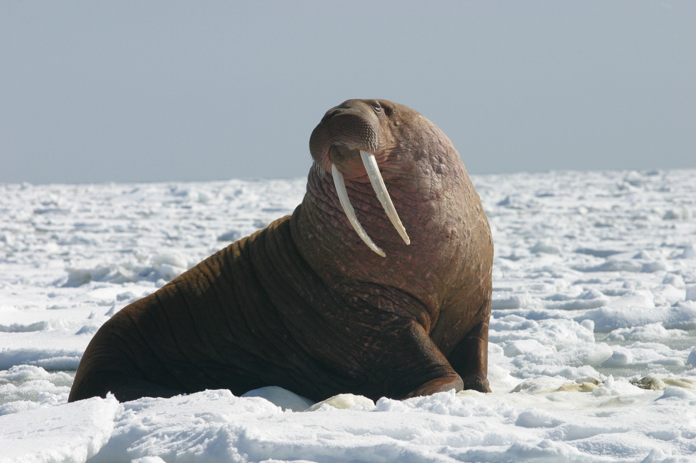

Peek-a-boo is an ancient game riddled in mystery and deceit. Though it appears to be an innocent children's pastime, you may change your mind when you learn of its treacherous history.
What a cute walrus! Click here to hide her again.
fadein THERE ARE TWO MAIN SUBSPECIES OF WALRUS
fadeout THEY WEIGH A TONNE
fadetoggle BOTH MALE AND FEMALE WALRUSES HAVE LARGE TUSKS